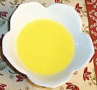

 |
SchmaltzJewish, European | ||||
| Makes: Effort: Sched: DoAhead: |
na ** 45 min Yes |
Schmaltz made from chicken fat or goose fat is traditional in European Jewish cuisine. It's used as a spread on bread, and to cook chopped liver, potato pancakes and other dishes. | |||
|
|
1 8 (opt) ar |
# oz |
Chicken or Goose Fat Onion Chicken or Goose Skin Water to cover |
The word is from German, but Schmalz in Germany may also be rendered tallow, or lard, or clarified butter. In North America, we presume the Yiddish meaning - rendered poultry fat, unless otherwise informed by context.
|